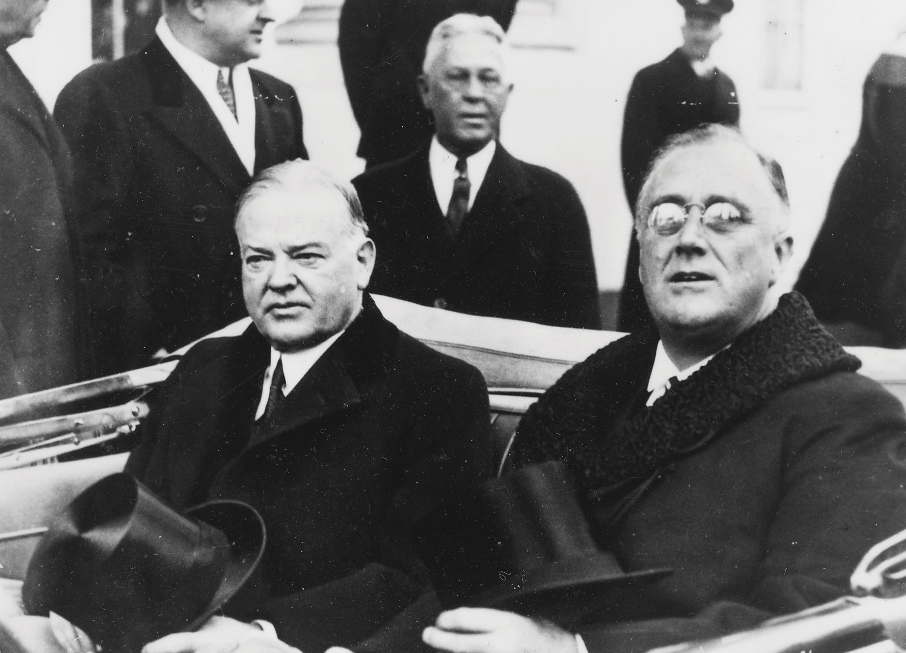
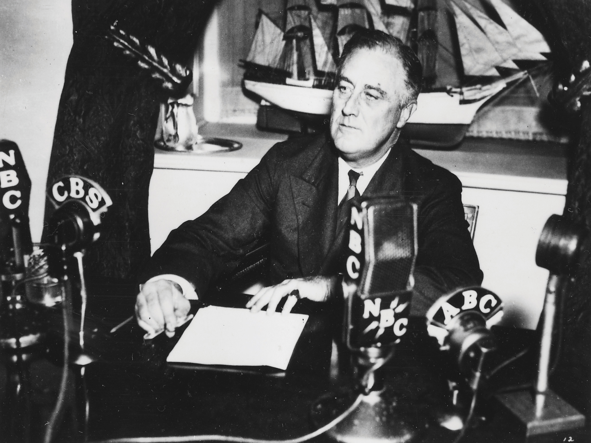
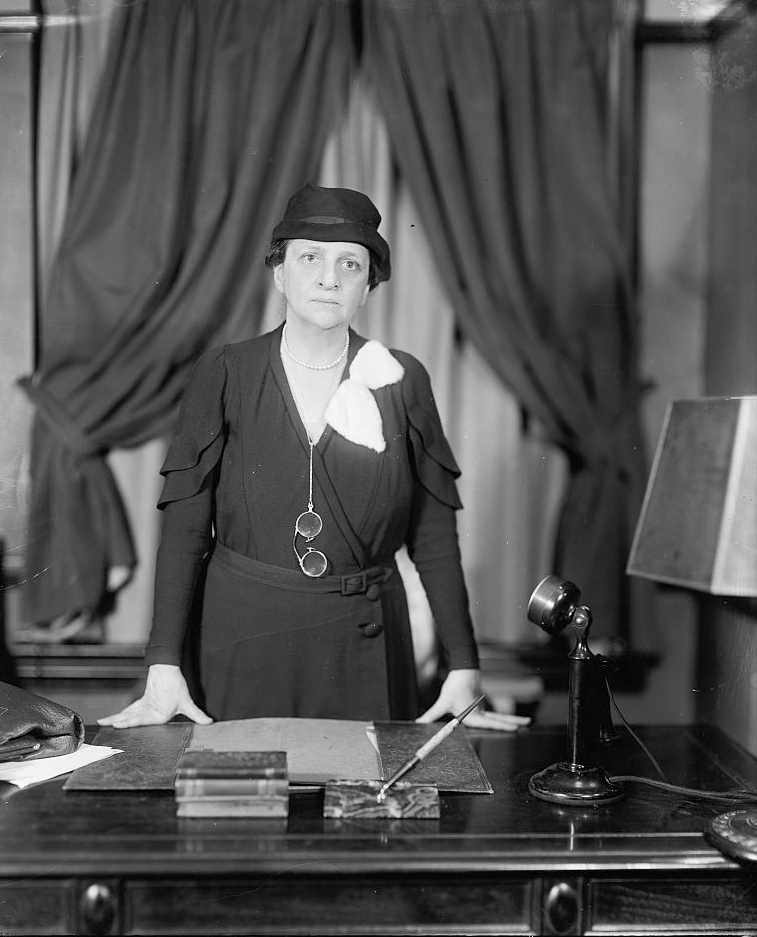
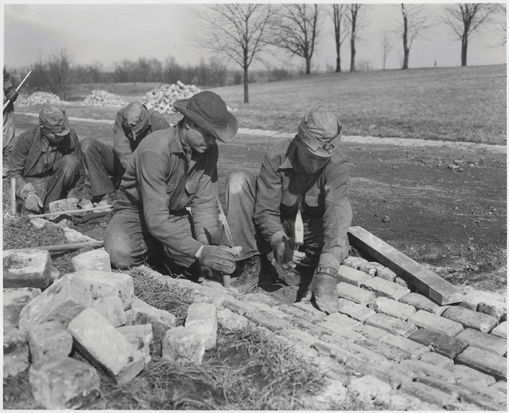
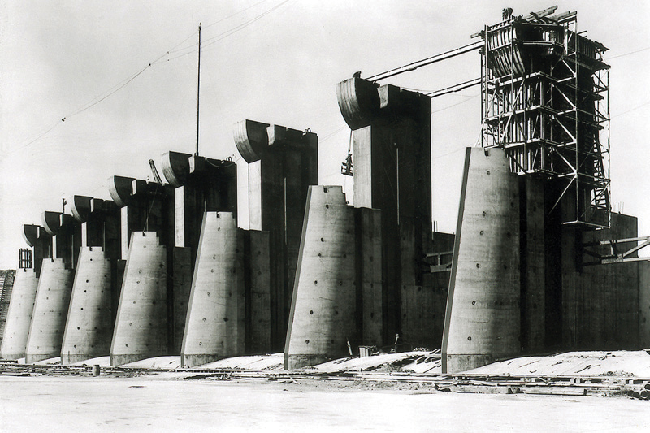
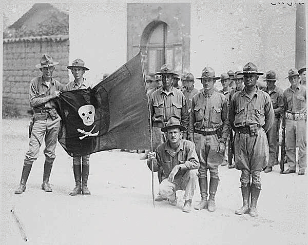

The provisions of the Twentieth Amendment to the Constitution shortened the time period between the November election and inauguration of the president from March 4 to January 22. This interim was known as the “lame duck” period and featured several months where the outgoing president remained in office. Because the Twentieth Amendment would not take effect until 1933, Hoover continued to preside over a nation whose banking system was teetering toward collapse.
An assassin’s bullet just missed president-elect Roosevelt in February of that year, instead killing Chicago mayor Anton Cermak while the two men were talking. Cermak’s death was mourned by Chicagoans and supporters of Progressivism nationwide. The Czech immigrant had risen through Chicago politics and defeated the Republican machine that was operated by city boss “Big Bill” Thompson. Thompson’s political machine had dominated the city in previous decades and was allegedly connected to organized crime figures such as Al Capone. Cermak reportedly turned to Roosevelt after the bullet hit him and said that he was glad the new president had been spared. While this mythical expression of the nation’s support for their president-elect became legend, most Americans were skeptical that their future leader was up to the challenge before him.
The new president still had not offered many specific details of how he planned to combat the Depression, and news of political gamesmanship between the outgoing and incoming presidents concerned the nation. Communications between Hoover and Roosevelt were full of posturing and intrigue. Hoover insisted that any meeting be held at the White House—a not-so-subtle reminder that he was still the president. Roosevelt wanted Hoover to meet him outside of the White House for similar prideful reasons. Hoover sought Roosevelt’s endorsement of several of his plans, a defensible request given the impending transfer of power. However, Roosevelt was suspicious that Hoover’s apparent goodwill was really an attempt to transfer responsibility for any consequences onto the new president. By Hoover’s perspective, Roosevelt’s intransigence was a political calculation based on making sure the nation’s economy did not turn the corner until he took office. The tragic result was that little was accomplished in the months between the election and Roosevelt’s inauguration.
Figure 7.2
Hoover and Roosevelt sit together on Inauguration Day. As the photo indicates, the two men shared reservations toward each other and did not work together during the period between the election and Roosevelt’s inauguration.
Bank foreclosures and bank failure did not wait for Inauguration Day. Every state placed restrictions preventing depositors from withdrawing more than a certain amount or a percentage of their holdings each day. Some areas suspended banking operations completely in an attempt to keep the entire system from imploding. Upon assuming office, the president declared his first priority was to restore order in the banking system. He announced that all banks would close for a four-day “holiday” while Congress met in an emergency session. Roosevelt assured the American people that the “nameless, unreasoning, unjustified terror” that gripped the nation was the only thing they needed to fear. The nation’s factories and farms were still productive, the president reminded his listeners. These productive centers had fueled the growth of America and would continue to do so if only they could recover from the financial instability that was born of uncertainty rather than any fundamental flaw in their design, the nation’s infrastructure, or the national character.
The president’s Emergency Banking Relief BillA law granting federal examiners the authority to examine the records of banks and determine which institutions were financially sound. All banks that passed this examination were permitted to reopen with the added security of the federal government’s commitment to provide additional funds if needed to ensure the financial stability of the bank. helped to restore confidence by pledging federal backing of the nation’s banking system. The bill was passed by unanimous consent in the House and by an overwhelming margin in the Senate on March 9, 1933. Due to the pervasive sense of emergency at that time, there was very little debate on the bill and most legislators never even read the legislation. However, most legislators understood and supported the fundamental changes to the banking system that would result. The new law granted the government the power to evaluate the financial strength of each bank. Those banks that passed inspection were allowed to receive unsecured loans from the federal government at low interest rates to help them through the crisis. The law also granted the federal government the authority to reorganize and reopen banks. Most importantly, Roosevelt committed the federal government to provide loans to banks to prevent them from failing.
The emergency law did not yet create the explicit guarantee of federal insurance for banks, although this guarantee would be part of legislation that would be passed later in Roosevelt’s term. However, the president delivered a well-conceived speech that was broadcast throughout the country. In this address, Roosevelt explained how the emergency law would prevent bank failures in the near term. The president’s radio address succeeded as banks reopened to long lines of depositors—a welcome sight given the recent history of panicked crowds waiting outside banks to withdraw funds. Conservatives and business interests were relieved that the president had used the power of the federal government to bolster the existing financial system rather than seek more radical change. Consumers were equally pleased to find that the government would take steps to protect the money they deposited in banks. The sudden wave of depositors also demonstrated the trust most Americans still had in government and the basic infrastructure of America’s financial system. Roosevelt would continue to use radio addresses, which he later dubbed “fireside chats,” to explain his policies directly to the people.
Figure 7.3
President Roosevelt sought to explain his policies directly to the public through a series of radio addresses he called “fireside chats.”
At the same time, Congress’s ready acceptance of a sweeping law that effectively gave the Roosevelt administration control over the fate of every private bank in the nation alarmed some observers. Even those who favored the banking bill worried that the balance of power between the executive and legislative branches had shifted in ways that could lead to unintended consequences. In addition, over one hundred members of the legislature were newly elected Democrats unaccustomed to Washington politics and perhaps overly eager to support the Roosevelt administration. Roosevelt’s unassuming personality and apparent sincerity helped to reduce this criticism, but not all in Washington or in the nation supported the new president. Others who were more skeptical had grown so frustrated by the perceived inaction of the previous years that they seemed willing to let Roosevelt and the Democrat-controlled Congress try anything.
Roosevelt enjoyed Democratic majorities in both the Senate and the House, and so in 1933, his critics could do little but warn of the possibility that the new president might abuse his powers. This message of warning and dissent remained largely in the background until 1937 when the economic recovery of the president’s first term crumbled in the midst of a second Wall Street crash. Until that time, Roosevelt sought to create goodwill among the various interests of labor and capital by inviting representatives of unions and businesses to help shape legislation. Throughout his first four years in office, Roosevelt enjoyed widespread popular support. Although he was able to pass nearly every one of the laws his advisors recommended during these years, securing lasting economic recovery would prove more difficult for the new president.
The emergency banking bill was merely the first of many sweeping changes the Roosevelt administration guided through Congress in the one hundred days between March 9 and June16, 1933. Together with other bills passed during the subsequent sessions of Congress between 1934 and 1936, Roosevelt created the basis of what would later be known as the New DealA series of economic reforms and programs that were supported by the Roosevelt administration and approved by Congress during Roosevelt’s first term. These programs sought to stabilize the banking industry and monetary and agricultural markets and provide temporary jobs.. For the first one hundred days of his administration, and for his first three years in office, nearly every proposal Roosevelt endorsed and sent to the floor of Congress was passed by large majorities. Not since George Washington had a US president enjoyed such influence over his nation’s government. For some, even the depths of the Great Depression could not justify the concentration of so much power into the hands of one man.
Part of the reason Congress went along with Roosevelt was that the changes his administration introduced were not as radical as his critics had feared. Roosevelt refused to consider having the federal government take direct control of banks or factories—a strategy known as nationalization that would become common in Socialist nations and dictatorships. Roosevelt sought advice from a rather conservative-minded group of well-educated and successful individuals. Known informally as the “Brains Trust,” Roosevelt’s informal advisers shared the perspective and background of other influential leaders in business and hoped to reform rather than replace the nation’s economic system.
Representing the best and the brightest in many fields, Roosevelt’s advisers offered a variety of ideas. The president tried nearly all of them in one form or another. In addition to this informal advisory team, Roosevelt appointed a number of well-qualified individuals to his cabinet. Secretary of Labor Frances Perkins and Interior Secretary Harold IckesSecretary of the Interior and one of the most influential members of the Roosevelt administration, Ickes was overseer of various federal works projects and supported greater autonomy for Native American tribes. were two of the most influential cabinet members, and many of the strategies the president attempted were those supported by Perkins and Ickes.
Figure 7.4
Frances Perkins was an influential member of Roosevelt’s cabinet and one of the architects of the New Deal as the secretary of labor.
Frances PerkinsThe longest-serving Secretary of Labor and the first woman in the cabinet, Perkins skillfully represented the concern of labor leaders within the administration. Although she often worked to secure the support of business leaders, she was consistent in her belief of the right of workers to bargain collectively with their employers. was able to secure the support of organized labor behind the president’s plans while also finding support among the leading business men of her day. Ickes administered the public face of the New Deal—government-funded construction projects meant to provide jobs while developing the nation’s infrastructure. Although each of the New Deal Programs Roosevelt’s advisers championed represented a fundamental change in the expectations of the federal government, many of them were also similar to those being considered by the Hoover administration in the year before Roosevelt’s inauguration. The crucial difference was that under Roosevelt, federal programs to stimulate the economy operated on a much more ambitious scale.
By the mid-1930s, the federal government was borrowing hundreds of millions of dollars each year. One-third of the federal budget was spent on public employment projects and relief for the poor. At the same time, federal budget deficits still represented a relatively small percentage of the GDP (gross domestic product)—the total market value of all goods and services produced each year. Federal spending during the Depression was certainly greater than any peacetime period in the nation’s history, but it still represented only a fraction of what the government spent during World War I. In addition, the US government would spend more in one year fighting World War II than was spent funding every New Deal program combined.
However, throughout its history the nation had tolerated large deficits and the expansion of government power during wartime and expected contraction and thrift during peacetime. The idea that the government should borrow money and provide direct employment during recessions and depressions had been raised since the 1830s but had never been seriously considered by federal leaders until the beginning of the Great Depression. For example, during a recession at the turn of the century, a group of men called Coxey’s Army marched to Washington asking the government to borrow money to provide jobs for the unemployed. These men were branded as radicals, and leaders such as Jacob Coxey were arrested. Keeping this background in mind, one can see why each of the following programs approved during Roosevelt’s first one hundred days reflected a very different way of viewing the role of the federal government.
Figure 7.5
Young men at work building a trail as part of a Civilian Conservation Corps project. The CCC employed young men between the ages of eighteen and twenty-five, as well as a number of veterans of all ages who needed work.
The New Deal, like all major legislative reforms, was not simply concocted by members of the Roosevelt administration. Its provisions were the result of hundreds of grassroots initiatives by union workers and the unemployed who created the New Deal through participation in local, state, and national politics. For example, rank-and-file workers in Chicago created and participated in many organizations that communicated their ideas to local government leaders. For the first time in the city’s history, the majority of these organizations were not based around ethnicity or a particular craft. Instead, they represented ideas and perspectives that crossed these fault lines that had divided workers in the past.
Support for the federal government directly providing jobs for the unemployed or arbitrating conflicts between labor and management had been building for several generations. The Great Depression led to an increased level of activism among workers who believed that the federal government must intervene on behalf of the common citizen. Local political machines had failed to insulate cities and states from the Depression, while the paternalism and generosity of welfare Capitalism displayed its limits. For example, in 1931, Henry Ford blamed the Depression on the character faults of workers. “The average man won’t really do a day’s work unless he is caught and cannot get out of it,” Ford declared. Later that same year, Ford laid off 60,000 workers at one of his most productive plants.
Private industry and banks were unable to stimulate recovery, and many leading businessmen beyond Henry Ford seemed indifferent to the plight of workers. In response, the Roosevelt administration became more willing to consider the perspectives of the unemployed and the poor. At the same time, Roosevelt was a member of the upper class and shared many of the same conservative beliefs regarding the role of government, as did business leaders and previous presidents. Like Hoover, Roosevelt was an outspoken opponent of expanding the dole—the epithet applied to state and local welfare programs that distributed food and money directly to the needy. He was also sensitive to the ideas of industry and believed that the only way out of the Depression was to create a more favorable business environment through government intervention.
The Roosevelt administration looked toward the War Industries Board of the previous decade as a model for how to achieve both greater prosperity and increased production. Government planning had worked during World War I, Roosevelt’s advisers believed, arguing that government intervention could also help revive several industries where prices had declined below the point of profitability. Representatives of workers and the unemployed also convinced Roosevelt that public works projects were necessary to provide immediate employment until the economy and the private sector recovered.
As a result, the New Deal sought to promote two objectives. First, it would provide “workfare” rather than welfare by offering short-term employment in public works projects. Second, it would seek to create a more well-ordered economic system that encouraged the recovery of the private sector in the long run. Key to the operation of this system would be the incremental termination of federal public works programs once private industry began to recover. If government employment continued too long, they believed, these federal programs would compete for workers and prevent America’s factories from fully recovering and resuming full production.
Representing these twin goals of relief through public employment and recovery through economic planning, the National Industrial Recovery Act (NIRA) created two massive agencies. The Public Works Administration (PWA)Created by the National Industrial Recovery Act, the PWA was a federal works program that generally worked with private contractors to create major public works projects. would oversee Roosevelt’s “workfare” relief program with a budget of $3 billion in its first year. The PWA contracted with private construction firms to build a variety of public works projects. Among the projects of the PWA were the Grand Coulee Dam in Washington State, the Lincoln Tunnel connecting New Jersey with New York City, the Overseas Highway connecting the Florida Keys, and the San Francisco-Oakland Bay Bridge. Although many doubted the usefulness of air power at the time, the PWA’s decisions to build the aircraft carriers Enterprise and Yorktown would later prove to be two of the most important decisions made during the New Deal.
The second provision of NIRA soon became both the most ambitious and most controversial program of the entire New Deal. The National Recovery Administration (NRA)Also created by the National Industrial Recovery Act, the NRA sought to create trade unions representing various industries that would create codes regulating wages, prices, and production. The goal was to provide a more ordered economy and eliminate overproduction that led to unnaturally low prices and low wages. Critics suggested that the NRA created cartels controlled by the largest firms to reduce production while increasing prices. The NRA was declared unconstitutional by the US Supreme Court in 1935. created planning councils that established codes governing each industry. For example, the automotive trade council was led by representatives of major car manufacturers, labor unions, and government officials. Together, this council would determine how many and what types of automobiles would be built, the prices of these vehicles, minimum wages, and other provisions that would guarantee both profitability and the well-being of workers.
The central idea behind the NRA was that without these quotas and minimum standards, car manufacturers (and other businesses) would continue to engage in cutthroat competition with one another. This was important because the Depression decreased the number of consumers to the point that manufacturers were forced to sell their products at or below cost. NRA supporters believed that industry-wide coordination and planning would ensure that manufacturers only produced the number of products that would sell at a predetermined price. Included in this price was a reasonable profit that would permit employers to pay their workers a better wage. In return, employees of these companies could enjoy a measure of financial security and once again become consumers whose discretionary spending had fueled the growth of the 1920s.
Although this kind of central planning might be well-intentioned, many Americans feared that unintended consequences would occur. They feared that planning councils would be controlled by a few corporations within each industry, thereby creating cartels that could operate without any fear of competition. Such a system would permit manufacturers to keep production so low that prices could be increased dramatically. If this occurred, the result would be large profits for industries that intentionally limited production in ways that prevented job growth. Others feared the government would control these planning councils, promoting the growth of Socialism. Defenders of the NRA argued that neither cartelization nor Socialism would develop so long as each council shared power between heads of industry, labor unions, and government regulators. Government planning had worked in World War I, they argued, while the ruinous competition of the unregulated free market had led to the excesses of the 1920s and would likely prolong the current Depression. Equally important, NRA defenders argued, was the fact that participation in the NRA was voluntary. The decisions of planning councils were merely codes rather than law, and businesses were still free to practice free market principles if they did not like the codes in their industry. However, refusal to participate in the NRA was not without its own consequences. Only those businesses that participated could display the NRA’s Blue Eagle in their storefronts and on their products. Failure to participate in the NRA was considered unpatriotic, and the government suggested consumers boycott any business that rejected the NRA’s codes.
Figure 7.6

Participation in the NRA was voluntary, but only businesses that followed the codes in their industry could display the Blue Eagle Emblem on their products or in their stores.
Volunteerism could only be effective if the majority of businesses in any given industry participated in or at least abided by the decisions of the NRA’s planning councils. In the first years of the NRA, most industries did participate. However, this level of participation was only achieved by allowing the largest companies in any industry to draft codes allowing them to reduce production and increase prices. While this might encourage stability, critics argued that the NRA was actually preventing economic recovery while violating free market principles. In 1935, the Supreme Court agreed with the critics of the NRA, who argued that the agency violated principles of limited government and free enterprise and placed too much power in the hands of the federal government.
Although the NRA was ruled unconstitutional, it inspired a number of important changes. To provide more jobs for heads of households, the NRA prohibited child labor and set the workweek at forty hours. The NRA also included minimum wages and required companies to pay 150 percent of a worker’s normal hourly wage for every hour he or she worked beyond forty hours. Each of these measures had long been goals of the labor movement. Although the forty-hour week and overtime pay were merely codes and not laws, they were now supported by the federal government. The main reason the government supported these measures was to encourage businesses to hire more workers as a means of reducing unemployment.
Subsequent legislation in Roosevelt’s first year included the creation of the Civil Works Administration (CWA). The CWA provided federal jobs for 4 million Americans between its creation in November 1933 and its termination only four months later. The majority of CWA workers were employed in small-scale construction and repair jobs, but the CWA also hired teachers in economically depressed areas. Critics charged the CWA with providing needless jobs, such as raking leaves in parks. Given the speed with which the CWA payroll grew and the lack of a bureaucratic structure to secure the needed planning and resources for meaningful projects, such criticism was often well placed. The program’s expenses grew faster and larger than the Roosevelt administration had anticipated until the CWA was eliminated in March 1934. However, the CWA would serve as a model for future projects by directly employing workers rather than operating through private contractors. At the same time, it provided a cautionary tale about the need for planning and direction before launching a nationwide public works program.
The white and black workers in the South cannot be organized separately as the fingers on my hand. They must be organized altogether, as the fingers on my hand when they are doubled up in the form of a fist.…If they are organized separately they will not understand each other, and if they do not understand each other they will fight each other, and if they fight each other they will hate each other, and the employing class will profit from that condition.
—A. Phillip Randolph
The Roosevelt administration created several programs that were aimed at providing targeted relief within a particular region, but none was as ambitious as the Tennessee Valley Authority (TVA)A regional New Deal agency that sought to bring low-cost electrical power to one of the most depressed areas of the country by constructing hydroelectric dams. The TVA also sponsored a number of infrastructure projects, as well as health and educational initiatives.. Inspired by the president’s emotional visit to an economically depressed region of the South, the TVA sought to provide direct employment through the construction of roads, buildings, bridges, and other projects. Most importantly, the TVA built hydroelectric dams to bring low-cost electricity to the area that would encourage commercial and industrial development. Many critics were understandably concerned about the environmental consequences of building dams all along the Tennessee River. In addition, many rural families who lived in the river valley were displaced in the process of construction. However, the TVA succeeded in spurring the growth of factories that brought modest prosperity to an area that had been among the most economically depressed regions of the country.
Figure 7.7

A family near Knoxville that was displaced by one of the Tennessee Valley Authority (TVA) projects.
Not all residents of the Tennessee River Valley shared equally in the progress. Only 1 percent of TVA employees were black, and these individuals faced segregation while at work. Later New Deal public works programs such as the WPA would fare better, expanding from a workforce that was 6 percent black to one that was just over 13 percent. Few of these workers had any opportunities for advancement, as only eleven out of the 10,000 Southern WPA supervisors were African Americans. However, for the small number of black families who found work with the TVA, as well as the thousands of white families, the TVA was nothing short of a godsend. It was also a political boon for Roosevelt. Northern progressives hoped the government would launch similar projects around the country, while Southern conservatives cheered their president’s economic support for their region. The creation of the TVA represented the first federal support for development of the South outside of Virginia or the Atlantic Coast. After generations of opposing the growth of the federal government, Southerners welcomed federal intervention once it was directed at the development of their infrastructure and economy.
The TVA would prove enormously successful and was one of the most popular programs of the New Deal. Nevertheless, it would take many years for dams to generate electricity that would fuel an industrial revolution throughout the Tennessee River Valley. For those living in the Deep South who were still largely dependent on cotton, the TVA offered little assistance. The price of cotton declined to half of its 1920 price at the start of the Depression. For farmers and sharecroppers in the South, as well as the millions of farmers in the Great Plains and Far West, immediate relief was imperative.
One of Roosevelt’s first programs was the creation of a federal agency that provided refinancing for the millions of farm families who could no longer afford their mortgages. Roosevelt’s next challenge was to alter the fundamental problem that had led to the mortgage crisis—the rapidly declining prices for agricultural commodities. Roosevelt’s solution was the Agricultural Adjustment Act (AAA). This agency offered direct payments to farmers who agreed to reduce their production. For example, an Iowa farmer who grew corn on 200 acres would be offered an amount equal to the profit he might expect to receive on 50 acres if he simply agreed to plant only 150 acres the next year.
Because the AAA was not approved until May 1933, farmers had already planted their crops, so the AAA paid them to plow their crops. For millions of starving Americans, the federal government’s decision to pay farmers to destroy crops and slaughter millions of pigs was the cruelest irony. In fairness, the AAA quickly adjusted its tactics and purchased crops and meat which were distributed to needy families. However, the AAA’s payments proved devastating for those who worked the land but did not own it. Landowners were effectively being paid to evict tenants, sharecroppers, and other farm laborers whose labor was no longer needed as a result of reduced production.
The AAA resulted in an immediate stabilization of farm prices, an important goal considering that a third of the nation depended on farm prices for their livelihood. The Supreme Court declared a few provisions of the law that rendered the AAA unconstitutional, but this action merely led to relatively minor modifications in the way the AAA was funded and administrated. Although the AAA was favored by farmers and is generally considered a success, one of the leading reasons for the increase in farm prices was the result of an ecological disaster that reduced crop yields on 100 million acres of farmland.
Irrigation permitted farmers to develop nearly every acre of flat soil in the Southern Plains. An extended drought in the mid-1930s turned much of this topsoil to dust. The natural vegetation of the Southern Plains had deep root structures, which had secured the topsoil from erosion for centuries, even during similar times of drought. However, several decades of commercial farming had altered the ecological balance of the Plains in ways that left it vulnerable. Winds blew across the treeless prairies, taking the dusty topsoil with it and creating the ecological disaster known as the Dust BowlAn ecological catastrophe during the mid-1930s within the Southern Great Plains. The Dust Bowl featured windstorms that removed the topsoil of 100 million acres of farmland. This topsoil had largely turned to dust as a result of drought and erosion..
The crisis of the Dust Bowl was so severe for farmers and those in cities who depended on the business of farmers that one in six Oklahoma residents abandoned the state during the 1930s. About 800,000 farmers and others who were dependent upon the farming industry were displaced as these lands were no longer productive. Most of these individuals headed to the West due to rumors of available jobs in California. However, jobs were also scarce along the West Coast, and the arrival of new job seekers led to tensions between these predominantly white refugees and Asian and Hispanic farm workers. The new arrivals were derisively labeled as “Okies,” regardless of what state they had migrated from, while nonwhite Californians were derided as un-Americans, regardless of how long they or their families had lived in the area.
Figure 7.8
Montana’s Fort Peck Dam was a Public Works Administration project that created one of the largest man-made lakes in the world when it was completed in 1940.
These dams and aquifers also created the possibility of irrigation, which could open millions of acres of previously arid land to farming. Cautious that such a course of action would further depress farm prices and possibly recreate the environmental disaster of the Great Plains, government policy restricted the use of water for farming and ranching in some areas of the West. However, many of these restrictions were ignored or modified. Before long, federal projects were directed toward facilitating the growth of industry and cities in some regions of the West. The result was rapid growth of the urban West in the next few decades that would encourage the most significant population shift in US history since the Homestead Act of 1862.
As the Dust Bowl demonstrated, aridity continued to define the American West. However, some New Deal initiatives sought to alter the region’s ecology and transform the West through the creation of massive dams that would provide both electricity and water for certain areas. Much like the TVA, the New Deal of the West placed its hopes in commercial development through damming rivers. The federal government demonstrated the almost limitless possibilities of American labor and engineering by constructing the Boulder Dam, which was later renamed in honor of President Hoover. The Hoover Dam spanned the Colorado River and was instrumental to the urban growth of Las Vegas, Phoenix, and Southern California. Similar dams were built in Washington State and across the Sacramento River.
The Great Depression bolstered isolationism within the United States and likely influenced the decision to withdraw troops from Haiti and Nicaragua in the early 1930s. Roosevelt put an end to the Platt Amendment’s provisions granting US sovereignty of Cuban affairs, with the exception of the US naval base at Guantanamo Bay. These changes signaled the beginning of Roosevelt’s Good Neighbor PolicyA policy aimed at improving relations with Latin American and Caribbean nations by removing US soldiers from these areas and demonstrating greater respect for the right of these nations to govern themselves. The policy was supported by Roosevelt, although many Latin American historians disagree about the sincerity of US commitment to nonintervention in Latin American affairs during the 1930s and beyond., which would mark a new age in US foreign policy in the Caribbean and Latin America.
In contrast to the frequent military interventions and economic imperialism that had typified the last few decades of America’s relations with the region, Roosevelt declared that no nation “has the right to intervene in the internal or external affairs” of their neighbors. Humanitarian concerns mixed with economic self-interest in forming Roosevelt’s new policy, as many Americans suspected that their tax money was being squandered abroad. Others believed that America’s foreign policy was aimed at exploiting the land and labor of Latin American nations when it should be used to fund projects that spurred development at home.
Figure 7.9
The United States Marine Corps in Nicaragua in 1932. Shortly after taking office, Roosevelt recalled these soldiers and many others deployed in Latin America as part of his “Good Neighbor Policy.”
Perceptions of self-interest likewise drove the decision to grant eventual independence to the Philippines, as long as the United States could maintain its naval bases in the region. The agreement granting Filipino independence also created a proviso that stripped Filipinos of the opportunity to work in the United States. This provision subjected any would-be migrants to the provisions of the 1924 National Origins Act, which placed quotas on the number of foreigners who could immigrate to the United States. Despite the fact that the Philippines would remain a US territory for another twelve years, by applying the terms of the 1924 law, only fifty Filipinos were permitted to enter the United States each year.
A different brand of isolationism led the Roosevelt administration to reconsider his earlier commitment to actively participate in the London Economic Conference of 1933. Partially as a result of non-US support, the conference failed to resolve international currency problems. Although it may be unfair to blame the Roosevelt administration for its unwillingness to actively devote itself to the stabilization of European currency, the rapid inflation of the 1920s and 1930s would contribute to the ease by which dictators seized power in central Europe. However, the Roosevelt administration would demonstrate great foresight in seeking to provide aid to England and the other nations willing to stand up to those dictators during his third term in office.
In the meantime, Roosevelt shocked many with his decision to open diplomatic and trade relations with the Soviet Union for the first time since the Russian Revolution of 1917. In addition to the desire to open US goods to new markets, Roosevelt hoped diplomacy would help to counter the growing menace of Japan and Germany. Humorist Will Rogers would comment that Roosevelt would have likely agreed to open diplomatic relations with the devil himself if only he would agree to purchase some American-made pitchforks. History would provide a kinder assessment, as Roosevelt’s overtures to the Soviets helped to thaw relations between the two leading nations in ways that would have a profound impact on the outcome of World War II.